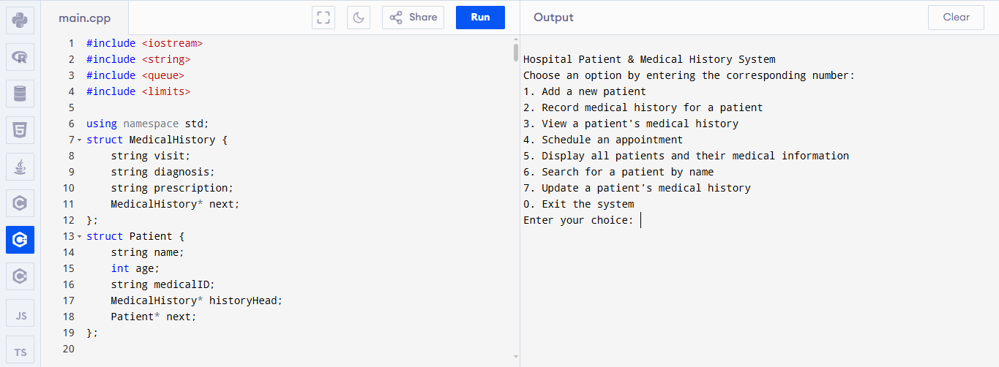

Hospital Patient Management System
A structured system designed to manage patient records, appointment flow, and medical history using efficient data structures and schema-driven logic.
- Patient registration and search
- Medical history tracking
- Queue-based appointment handling
- Organized, modular system design